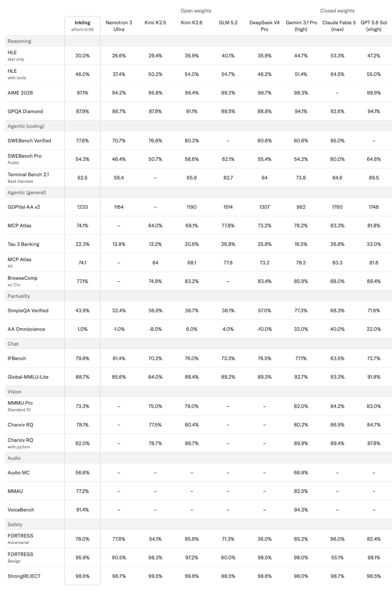
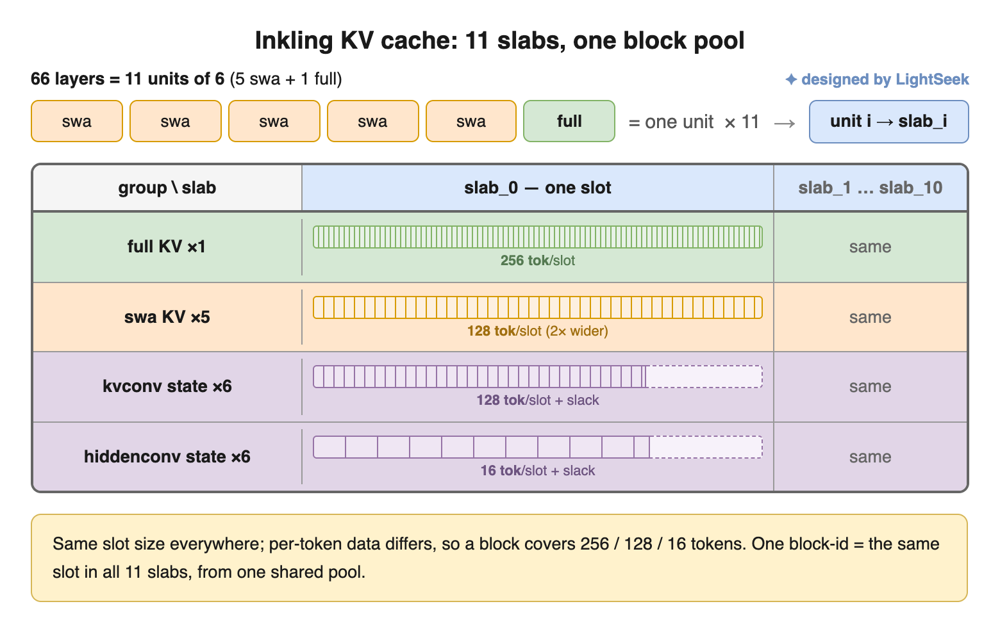
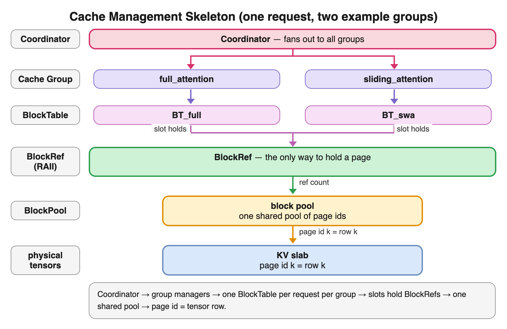
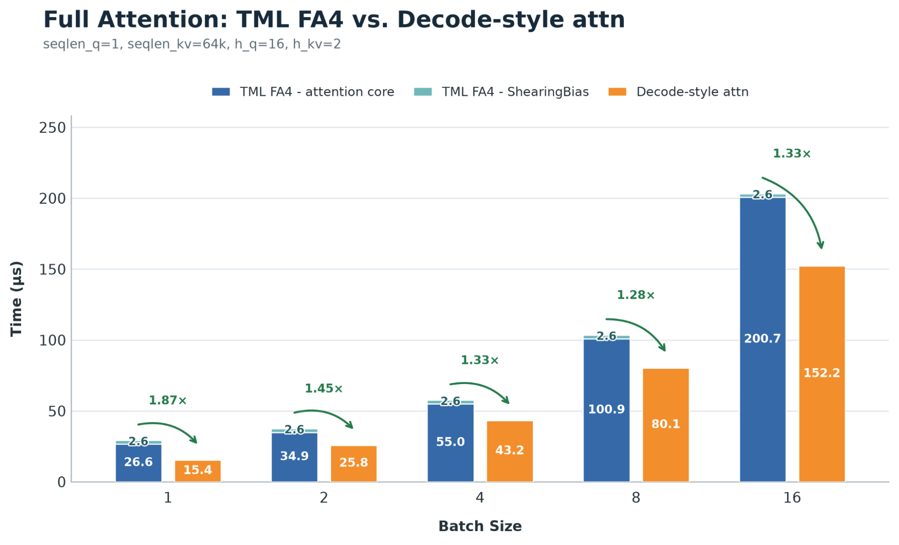
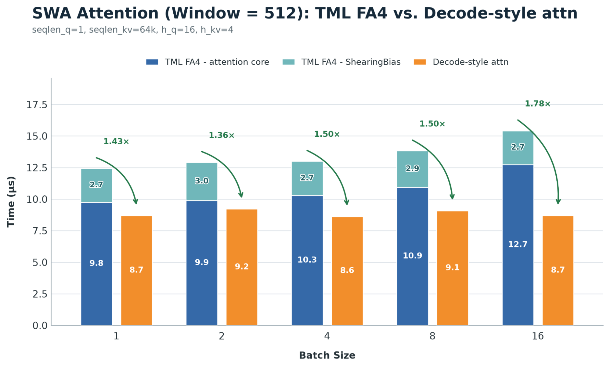
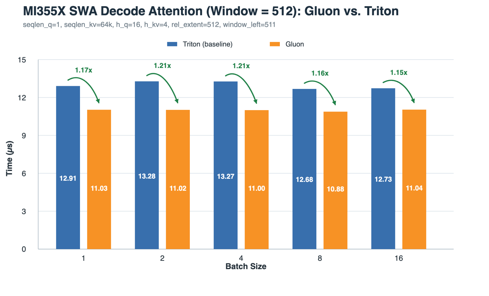
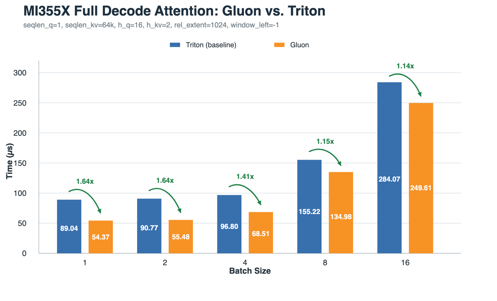
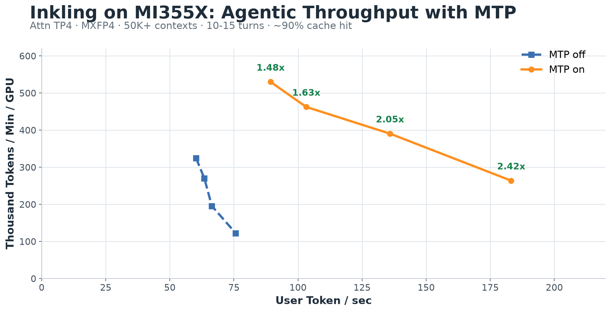
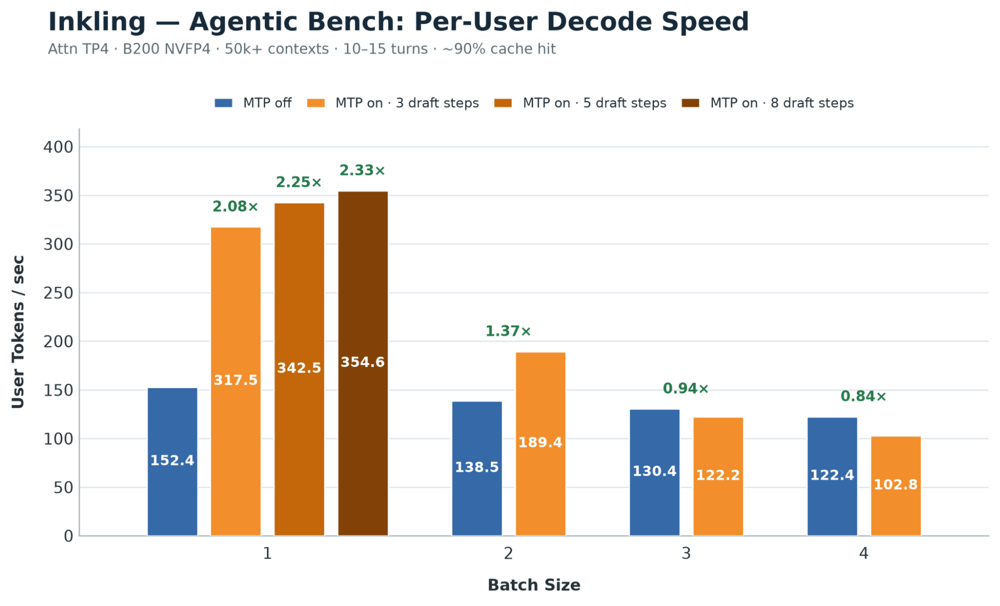

Thinking Machines Lab（TML）发布开源 MoE 模型 Inkling，总参数 975B、每 token 激活 41B。TokenSpeed 与 TML 合作，在首发日就为其提供跨 NVIDIA/AMD 的推理支持。本文梳理其架构、原生 FP4 检查点，以及支撑跨平台推理的引擎与 kernel 工作。
面向 AMD 的原生 MXFP4 权重：用 AMD Quark 生成并发布 Inkling MXFP4 检查点，提供 NVFP4 的 AMD 原生替代方案。


面向复杂注意力的扁平 KV 缓存架构：为全注意力、滑动窗口注意力与卷积状态设计异构视图的扁平缓存布局，分配与调度统一且不浪费显存。
借助 TokenSpeed Kernel 统一多芯片开发：一个 kernel API 横跨 NVIDIA 与 AMD，复用模型逻辑、只在关键处专门优化。
面向 NVIDIA 的更快 CuteDSL 解码 kernel：专为解码写的注意力 kernel，比 prefill 路径更高效映射短查询、长 KV 负载。
面向 AMD 的高性能 Gluon 注意力：用 persistent prefill 与 split-K decode 设计，在 AMD GPU 上实现强劲性能。
Inkling 是基于 transformer 的 MoE 模型，交替使用全注意力与滑动窗口注意力。模型共 66 层、256 个路由专家，每 token 激活 6 个路由专家与 2 个共享专家，总参数达 9750 亿。其基准测试成绩与其他开源模型相当。

参考检查点使用 BF16，NVFP4 量化版本在 NVIDIA GPU 上运行。为支持 AMD GPU，团队用 AMD Quark 将模型量化为面向 MI350X/MI355X 的 MXFP4，检查点发布于 lightseekorg/Inkling-MXFP4。评测中 NVFP4 与 MXFP4 检查点在质量上接近 BF16 基线，同时实现更高服务性能。


TokenSpeed 的模块化架构将模型层、调度器与 kernel 子系统在清晰边界后分离。启用 Inkling 因此是一个系统性过程：编写与加速器无关的模型逻辑、复用现有调度器、用统一 kernel API 从同一套模型集成拉起 NVIDIA 与 AMD 支持。在此共同基线之上，再加入针对每种加速器架构定制的推理引擎技术与原生 kernel。


Inkling 推理携带三种持久状态：全注意力层不断增长的 KV 状态、滑动窗口层有界的 KV 状态，以及卷积的窗口状态。为每个状态维护独立内存池会碎片化缓存并使调度复杂化；而单一池子配统一页形状又会把较小条目填充到最大页体积造成浪费。

TokenSpeed 改用单一扁平分页池配合异构视图。类似原则也见于 vLLM 中的 Jenga（分离物理内存分配与逻辑内存组织）。Inkling 的 66 层构成 11 个重复单元，每单元含 5 个滑动窗口层与 1 个全注意力层，连同 6 个 KV 卷积与 6 个隐状态卷积，每个单元映射到一个 slab。一个 block ID 在所有 11 个 slab 中选相同大小的固定槽位；因各状态每 token 占用不同，该槽位可容纳 256 个全注意力 KV、128 个滑动窗口 KV 或 KV 侧卷积状态、或 16 个隐状态卷积状态。这保持了分配单元统一，又不必强制逻辑页大小统一。
缓存管理层次中，一个协调器把每个请求分发给各缓存组，每组维护自己的按请求 BlockTable。表项持有指向共享块池的引用计数 BlockRef，page ID k 直接映射到物理 slab 第 k 行。组管理器控制匹配与淘汰策略，但内存所有权集中，使释放页能安全、立即跨组复用。物理布局与管理层次一起，在单一共享分配器与单一调度模型之上提供异构缓存视图。
注意力占据 Inkling 计算的很大一部分，但 prefill 与 decode 形态截然不同。prefill 时 Q 序列很长，FlashAttention 风格 kernel 有足够并行度沿 Q 长度分块，因此复用 TML 的 FlashAttention-4（FA4）路径（由 Colfax Research 开发）。
decode 时查询通常只有一两个 token，KV 缓存却可能很长；偏好 prefill 的 kernel 围绕大 Q 分块组织，许多计算通道未被充分利用。专用 decode kernel 改为在长 KV 序列上流式处理，把小的查询/预测维度更高效地打包进每个 CTA 分块，提升了短查询 decode 的 GPU 利用率。
为支持 softmax 前施加的相对偏置，FA4 prefill 路径用独立 ShearingBias 预处理 kernel（开销可在多查询行摊薄）；decode 时查询维度足够小，可直接在在线 softmax 循环内计算相对索引。

对 AMD GPU，团队扩展了 TokenSpeed 现有的 Gluon 注意力 kernel 以覆盖 Inkling 的 prefill 与 decode 负载：prefill 用 persistent 循环，decode 用 split-K。由于与 NVIDIA 后端一同实现统一 kernel API，模型代码保持加速器无关，而 AMD 路径能以最小集成工作量使用专门的高性能 kernel。
在多轮 agentic 工作负载上（50K+ token 上下文、每对话 10–15 轮、缓存命中率约 90%），TokenSpeed 在 4 张 NVIDIA B200 上以 NVFP4 运行 Inkling：并发 1 时每用户 317 tokens/s，其中 MTP（多 token 预测，3 个 draft 步）每轮迭代推进约 3.3 个 token。关闭 MTP 时，并发 1 维持每用户 152 tokens/s（每迭代 6.6 ms），并发 4 维持每用户 122 tokens/s，此时系统吞吐量达 40K tokens/s。
batch size 1 时，3/1/4、5/1/6、8/1/9 三种 MTP 配置（对应 3、5、8 个 draft 步）分别带来每用户 317.5、342.5、354.6 tokens/s；相比关闭 MTP 的 152.4 tokens/s，decode 吞吐提升 2.08×、2.25×、2.33×。
MXFP4 检查点也让 AMD 上的 agentic 服务切实可行：让 975B 模型在 4 张 MI355X 上运行，同时保留足够缓存支撑 50K+ token 上下文与多轮对话。由于 TokenSpeed 将模型逻辑与调度同 kernel 分离，AMD 可复用与 NVIDIA 相同的 MTP 路径而无需改动模型层。早期 MI355X 运行中，batch size 1–4 范围内 MTP 将每用户 decode 速度从 2.4x 提升至 1.5x。
参考：https://lightseek.org/blog/tokenspeed-inkling.html